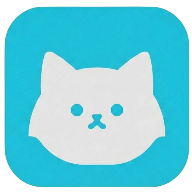

未连接
我的配置
未选择配置
应用设置
内核设置
内核日志
备份与同步
关于
PROXIES 策略组
订阅与配置文件
config.yaml (本地默认)
端口: 7890 | 控制: 9090
[INFO] Mihomo core daemon service ready
Google 连通性
测试中...
Cloudflare 连通性
测试中...
开机自启
登录系统后自动启动代理
TUN 虚拟网卡模式
接管系统全局网络流量
混合端口 (Mixed Port)
HTTP / SOCKS5 入站

Wmimo Proxy Client
Version 1.0.28 (Core: Mihomo / Rust Engine)
Wmimo 是一款基于 Flutter 与 Rust 构建的现代化全平台（Windows / Android / iOS / macOS / Linux / Web）代理客户端，支持多协议内核、规则分流、机场订阅与云端同步。